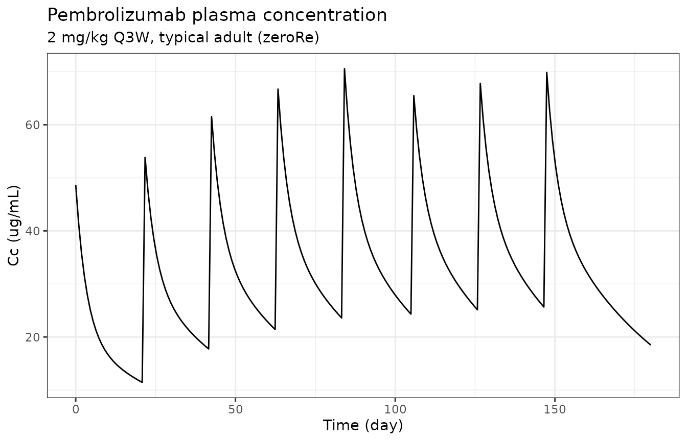
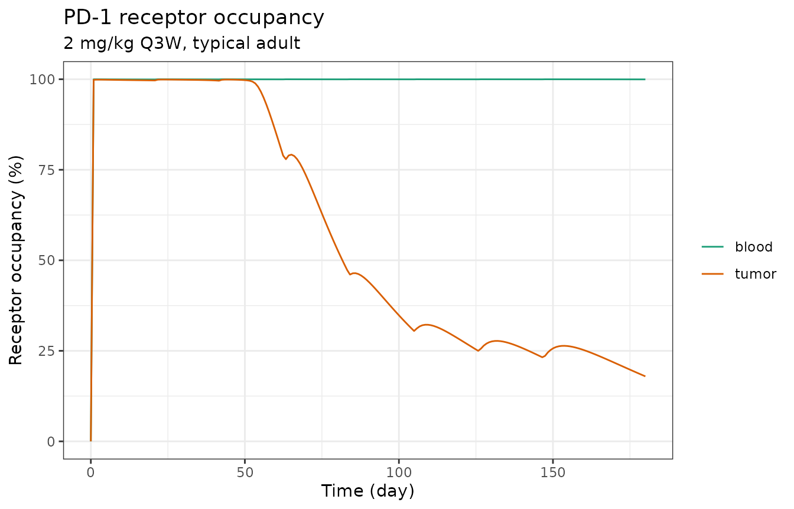
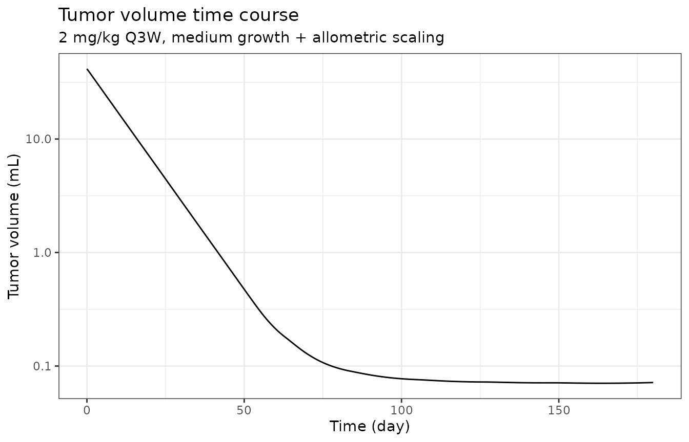
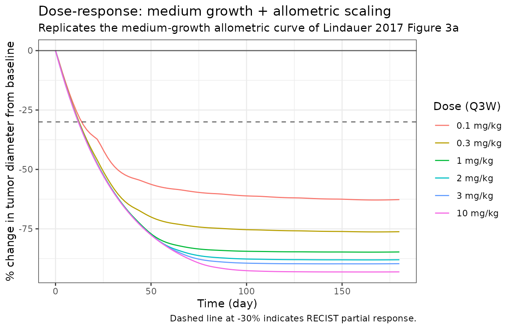
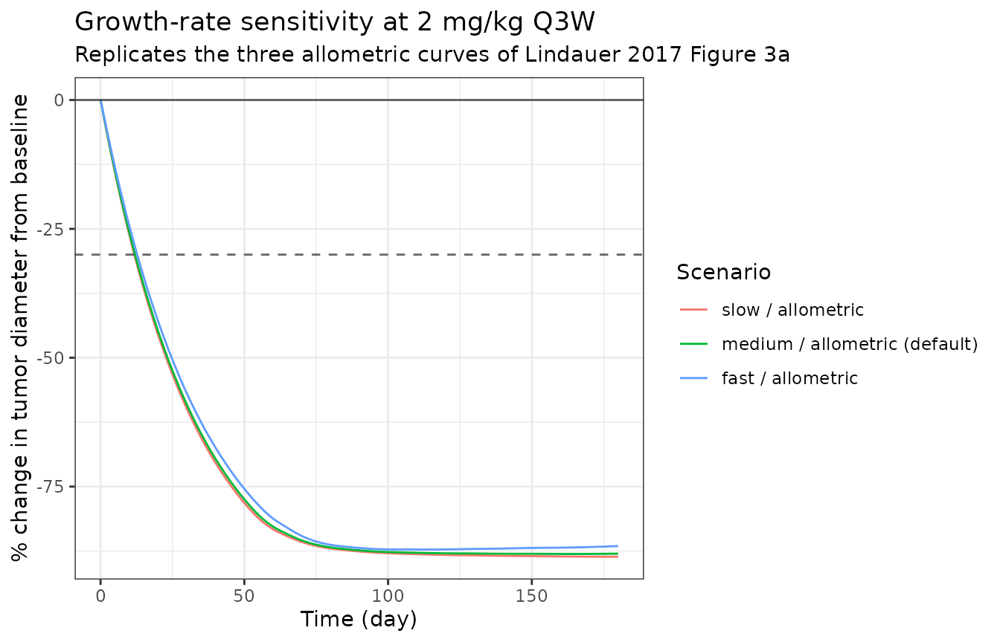

Pembrolizumab translational TGI (Lindauer 2017)
Source:vignettes/articles/Lindauer_2017_pembrolizumab.Rmd
Lindauer_2017_pembrolizumab.RmdModel and source
- Citation: Lindauer A, Valiathan CR, Mehta K, Sriram V, de Greef R, Elassaiss-Schaap J, de Alwis DP. Translational Pharmacokinetic/Pharmacodynamic Modeling of Tumor Growth Inhibition Supports Dose-Range Selection of the Anti-PD-1 Antibody Pembrolizumab. CPT Pharmacometrics Syst Pharmacol. 2017;6(1):11-20.
- DOI: https://doi.org/10.1002/psp4.12130
- PMC supplements: https://www.ncbi.nlm.nih.gov/pmc/articles/PMC5270293/
- Sibling models:
modellib('Ahamadi_2017_pembrolizumab')(exposure-response in advanced solid tumors);modellib('Elassaiss-Schaap_2017_pembrolizumab')(KEYNOTE-001 popPK with direct-response IL-2 PD).
Population
The structural model was fit to data from MC38 colon-adenocarcinoma syngeneic-allograft C57BL/6 mice receiving either the chimeric mouse or parental rat DX400 surrogate anti-mouse-PD-1 antibody. The PK dataset combined two preclinical studies (216 + 100 plasma samples from 316 mice receiving 0.1 to 10 mg/kg IV on days 0, 7, and 14 or days 0 and 4; 40 below-quantification samples discarded). The PD dataset comprised 466 tumor-volume measurements (rat DX400 at vehicle, 0.1, 0.4, 1.4, or 5 mg/kg on days 0 and 4) and 139 receptor-occupancy measurements in blood and tumor (Lindauer 2017 Tables S1, S2).
For human dose-response simulations the plasma-PK sub-model is
replaced by the Elassaiss-Schaap 2017 KEYNOTE-001 popPK
(modellib('Elassaiss-Schaap_2017_pembrolizumab')). The
mini-PBPK tumor-tissue parameters (volume fractions, plasma flow, lymph
flow, FcRn concentration, vascular and lymph reflection coefficients)
are kept constant across species per the Shah & Betts 2012 platform
assumption. KdegPD-1 is allometrically scaled with the standard -0.25
body-weight exponent. The reference adult is 70 kg.
The same metadata is available programmatically:
spec <- nlmixr2lib::readModelDb("Lindauer_2017_pembrolizumab")
pop_meta <- environment(spec)$population
if (is.null(pop_meta)) {
pop_meta <- local({
env <- new.env()
body_expr <- body(spec)
for (i in seq_along(body_expr)[-1]) {
ex <- body_expr[[i]]
if (is.call(ex) && length(ex) >= 1 && identical(ex[[1]], as.name("<-"))) {
nm <- as.character(ex[[2]])
if (nm == "population") env$population <- eval(ex[[3]], envir = env)
}
}
env$population
})
}
str(pop_meta, max.level = 1)
#> List of 13
#> $ species : chr "human (translational projection from preclinical C57BL/6 mouse MC38 colon-adenocarcinoma allograft)"
#> $ n_subjects : int NA
#> $ n_studies : int 0
#> $ age_range : chr "not applicable (simulated typical adult, 70 kg reference)"
#> $ age_median : chr "not applicable"
#> $ weight_range : chr "70 kg reference body weight; allometric scaling assumes a single typical adult"
#> $ weight_median : chr "70 kg"
#> $ sex_female_pct: num NA
#> $ race_ethnicity: chr "not applicable (translational simulation)"
#> $ disease_state : chr "Advanced / metastatic cutaneous melanoma; KEYNOTE-001 expansion-cohort dose-selection rationale"
#> $ dose_range : chr "0.1-10 mg/kg IV Q2W or Q3W in the published dose-response simulations; 2 mg/kg Q3W is the recommended lowest ma"| __truncated__
#> $ regions : chr "Translational simulation (no clinical trial population)"
#> $ notes : chr "The model is fit on mouse PK + receptor-occupancy + tumor-volume data from MC38-bearing C57BL/6 syngeneic allog"| __truncated__Source trace
Every parameter has a trailing in-file comment in
inst/modeldb/specificDrugs/Lindauer_2017_pembrolizumab.R
pointing to the source location. The table below collects the key ones
for review.
| Block | Parameter | Value | Source location |
|---|---|---|---|
| Plasma PK |
lcl (CL_lin) |
0.167 L/day | Lindauer 2017 Table 1, “Value in man” row CL (= 167 mL/day) |
| Plasma PK |
lvc (V1) |
2.877 L | Lindauer 2017 Table 1, “Value in man” row V1 |
| Plasma PK |
lq (Q) |
0.384 L/day | Lindauer 2017 Table 1, “Value in man” row Q |
| Plasma PK |
lvp (V2) |
2.854 L | Lindauer 2017 Table 1, “Value in man” row V2 |
| Plasma PK | lvmax |
0.114 mg/day | Lindauer 2017 Table 1, “Value in man” row Vmax |
| Plasma PK | lkm |
0.078 ug/mL | Lindauer 2017 Table 1, “Value in man” row Km |
| Tumor PBPK |
f_v_es, f_v_is, f_v_vs
|
0.5%, 55%, 7% | Lindauer 2017 Table 1, “Value in mouse” rows V_es / V_is / V_vs |
| Tumor PBPK | plq_norm |
304.8 /day | Lindauer 2017 Table 1, “Value in mouse” row PLQ = 12.7 L/h/L |
| Tumor PBPK | f_lymph |
0.002 of PLQ | Lindauer 2017 Table 1, “Value in mouse” row L = 0.2% of PLQ |
| Tumor PBPK | clup_norm |
0.8784 /day | Lindauer 2017 Table 1, “Value in mouse” row CLup = 0.0366 L/h/L |
| Tumor PBPK | kdeg_endo |
1029.6 /day | Lindauer 2017 Table 1, “Value in mouse” row Kdeg = 42.9 1/h |
| Tumor PBPK |
v_ref, v_ref_is
|
0.842, 0.2 | Lindauer 2017 Table 1, “Value in mouse” rows v_ref / v_ref_is |
| Tumor PBPK | fcrn_init |
49800 nM (= 49.8 uM) | Lindauer 2017 Table 1, “Value in mouse” row FcRni |
| Tumor PBPK | fr_recycle |
0.715 | Lindauer 2017 Table 1, “Value in mouse” row FR |
| FcRn binding |
kon_fcrn, koff_fcrn
|
19.008 /(nM*day), 573.6 /day | Lindauer 2017 Table 1, human row Kon_FcRn (= Shah & Betts) |
| PD-1 binding |
kon_pd1, koff_pd1
|
69.12 /(nM*day), 3.456 /day | Lindauer 2017 Table 1, human row Kon_PD-1 / Koff_PD-1 (Merck data on file) |
| PD-1 expression |
n_tcell, n_pd1_tc
|
792 /uL, 10000 /cell | Lindauer 2017 Table 1, “Value in man” row N_Tcell (Merck Manuals normal) and assumed N_PD-1_TC |
| Feedback |
tmulti, emax_tp, ec50_tp
|
4.32, 94.7, 1.46 nM | Lindauer 2017 Table S2 mouse PK/PD estimates (constant across species per Table 1 source row) |
| Complex degr. | kdeg_pd1 |
0.0590 /day | Lindauer 2017 Table 1, “Value in man” row KdegPD-1 = 0.00246 1/h (allometric -0.25 from mouse) |
| Tumor growth |
ll0 (L0) |
0.0036 /day | Lindauer 2017 Table S3 “Medium growth” scenario |
| Tumor growth |
lrbase (W0) |
41.5 mL | Lindauer 2017 Table S3 “Baseline volume” = 41.5 mL (= 64 mm SLD per Chiu/Ouellet) |
| Tumor growth |
lsltg (SLtg) |
2.575E-6 /day | Lindauer 2017 Table S3 medium/allometric SLtg |
| Tumor growth | lgamma |
2.28 | Lindauer 2017 Table S2 mouse PK/PD gamma (kept for human) |
| Tumor growth | psi |
20 | Simeoni 2004 standard PSI = 20 (cited by Lindauer 2017) |
| IIV | etall0 |
omega^2 = 0.30237 | Lindauer 2017 Table S2 IIV L0 = 59.4% CV (mouse fit) |
| IIV | etalrbase |
omega^2 = 0.13164 | Lindauer 2017 Table S2 IIV W0 = 37.5% CV (mouse fit) |
| Residual error |
propSd, addSd
|
0.197 fraction; 0.0658 ug/mL | Lindauer 2017 Table S2 mouse PK residuals (placeholders for human) |
| Residual error |
expSd_R0_blood, expSd_R0_tumor
|
0.627, 0.508 CV | Lindauer 2017 Table S2 mouse RO residuals (placeholders for human) |
| Equation | central compartment | n/a | Lindauer 2017 supplement section “Central compartment” |
| Equation | vascular tumor space | n/a | Lindauer 2017 supplement section “Vascular space tumor” |
| Equation | endosomal unbound + bound | n/a | Lindauer 2017 supplement sections “Endosomal space mAb …” |
| Equation | interstitial tumor | n/a | Lindauer 2017 supplement section “Interstitial compartment” |
| Equation | tumor blood + tumor binding | n/a | Lindauer 2017 supplement sections “Drug receptor binding…” |
| Equation | tumor PD-1 upregulation | n/a | Lindauer 2017 supplement section “Tumor PD-1 receptor upregulation and elimination” |
| Equation | tumor volume | n/a | Lindauer 2017 supplement section “Tumor volume” (Simeoni) |
Load the model
mod <- rxode2::rxode2(nlmixr2lib::readModelDb("Lindauer_2017_pembrolizumab"))
#> ℹ parameter labels from comments will be replaced by 'label()'
mod
#> ── rxode2-based free-form 10-cmt ODE model ─────────────────────────────────────
#> ── Initalization: ──
#> Fixed Effects ($theta):
#> mw_mab lcl lvc lq
#> 1.490000e+05 -1.789761e+00 1.056748e+00 -9.571127e-01
#> lvp lvmax lkm f_v_es
#> 1.048722e+00 -2.171557e+00 -2.551046e+00 5.000000e-03
#> f_v_is f_v_vs plq_norm f_lymph
#> 5.500000e-01 7.000000e-02 3.048000e+02 2.000000e-03
#> clup_norm kdeg_endo v_ref v_ref_is
#> 8.784000e-01 1.029600e+03 8.420000e-01 2.000000e-01
#> fcrn_init fr_recycle kon_fcrn koff_fcrn
#> 4.980000e+04 7.150000e-01 1.900800e+01 5.736000e+02
#> kon_pd1 koff_pd1 n_tcell n_pd1_tc
#> 6.912000e+01 3.456000e+00 7.920000e+02 1.000000e+04
#> tmulti emax_tp ec50_tp kdeg_pd1
#> 4.320000e+00 9.470000e+01 1.460000e+00 5.900000e-02
#> ll0 ll1 lrbase lsltg
#> -5.626821e+00 1.381551e+01 3.725693e+00 -1.286966e+01
#> lgamma psi propSd addSd
#> 8.241754e-01 2.000000e+01 1.970000e-01 6.580000e-02
#> propSd_tumor_vol expSd_R0_blood expSd_R0_tumor
#> 2.000000e-01 6.270000e-01 5.080000e-01
#>
#> Omega ($omega):
#> etall0 etalrbase
#> etall0 0.30237 0.00000
#> etalrbase 0.00000 0.13164
#> attr(,"lotriLabels")
#> [1] "Lindauer 2017 Table S2 IIV L0 = 59.4% CV"
#> [2] "Lindauer 2017 Table S2 IIV W0 = 37.5% CV"
#> attr(,"lotriFix")
#> etall0 etalrbase
#> etall0 FALSE FALSE
#> etalrbase FALSE FALSE
#>
#> States ($state or $stateDf):
#> Compartment Number Compartment Name
#> 1 1 central
#> 2 2 peripheral1
#> 3 3 tumor_vs
#> 4 4 tumor_es_ub
#> 5 5 tumor_es_b
#> 6 6 tumor_is
#> 7 7 complex_blood
#> 8 8 complex_tumor
#> 9 9 target_tumor
#> 10 10 tumor_vol
#> ── Multiple Endpoint Model ($multipleEndpoint): ──
#> variable cmt dvid*
#> 1 Cc ~ … cmt='Cc' or cmt=11 dvid='Cc' or dvid=1
#> 2 tumor_vol ~ … cmt='tumor_vol' or cmt=10 dvid='tumor_vol' or dvid=2
#> 3 R0_blood ~ … cmt='R0_blood' or cmt=12 dvid='R0_blood' or dvid=3
#> 4 R0_tumor ~ … cmt='R0_tumor' or cmt=13 dvid='R0_tumor' or dvid=4
#> * If dvids are outside this range, all dvids are re-numered sequentially, ie 1,7, 10 becomes 1,2,3 etc
#>
#> ── μ-referencing ($muRefTable): ──
#> theta eta level covariates
#> 1 ll0 etall0 id
#> 2 lrbase etalrbase id
#>
#> ── Model (Normalized Syntax): ──
#> function() {
#> covariateData <- list()
#> description <- "QSP / mini-PBPK. Translational semi-mechanistic PK/PD/TGI model for the anti-PD-1 monoclonal antibody pembrolizumab in advanced melanoma. Couples a two-compartment plasma PK (parallel linear + Michaelis-Menten clearance, human PK substituted from Elassaiss-Schaap 2017 KEYNOTE-001) to a Shah-Betts (2012) physiologic tumor tissue compartment (vascular, endosomal, interstitial sub-spaces with FcRn recycling), mechanistic pembrolizumab-PD-1 binding in both blood and tumor, an indirect-response positive feedback that upregulates tumor PD-1 expression when the complex forms, and a Simeoni-type tumor-growth model in which the antitumor effect is a power function of the tumor receptor occupancy. Mouse-derived parameter estimates plus three human melanoma growth-rate scenarios (slow/medium/fast) and two kill-rate scaling options (allometric / growth-proportional) are tabulated in Lindauer 2017 Table 1 and Table S3; the default human parameterisation here is medium growth with allometric kill-rate scaling (the central reference scenario)."
#> paper_specific_compartments <- c("tumor_vs", "tumor_is",
#> "tumor_es_ub", "tumor_es_b", "complex_blood", "complex_tumor",
#> "target_tumor", "tumor_vol")
#> population <- list(species = "human (translational projection from preclinical C57BL/6 mouse MC38 colon-adenocarcinoma allograft)",
#> n_subjects = NA_integer_, n_studies = 0L, age_range = "not applicable (simulated typical adult, 70 kg reference)",
#> age_median = "not applicable", weight_range = "70 kg reference body weight; allometric scaling assumes a single typical adult",
#> weight_median = "70 kg", sex_female_pct = NA_real_, race_ethnicity = "not applicable (translational simulation)",
#> disease_state = "Advanced / metastatic cutaneous melanoma; KEYNOTE-001 expansion-cohort dose-selection rationale",
#> dose_range = "0.1-10 mg/kg IV Q2W or Q3W in the published dose-response simulations; 2 mg/kg Q3W is the recommended lowest maximally efficacious dose",
#> regions = "Translational simulation (no clinical trial population)",
#> notes = "The model is fit on mouse PK + receptor-occupancy + tumor-volume data from MC38-bearing C57BL/6 syngeneic allograft mice receiving the mouse or rat DX400 surrogate anti-mouse-PD-1 antibody (216 mouse + 100 rat antibody PK samples from 316 mice; 466 tumor-volume + 139 receptor-occupancy PD samples; see Lindauer 2017 Tables S1-S2). For human dose-response simulations the plasma-PK sub-model is replaced by the Elassaiss-Schaap 2017 KEYNOTE-001 PK; the tumor-tissue mini-PBPK and the PD-1 feedback parameters are kept constant across species, and KdegPD-1 is allometrically scaled. Three melanoma growth-rate scenarios (fast / medium / slow) and two kill-rate scaling assumptions (allometric / growth-proportional) are listed in Table 1 and Table S3; the default coefficients in this file encode the central reference (medium growth, allometric scaling). Run the validation vignette for the other five scenarios. FcRn is treated as a conserved species in the endosomal space (FcRn_free + complex = constant total), which is the standard Shah & Betts 2012 implementation and resolves apparent typos in the Lindauer 2017 supplement transcription of the FcRn dFcRn/dt equation. The bimolecular Kon * (free PD-1) consumption term in the supplement's central-compartment equation lacks the C1 antibody multiplier; the implementation here applies the canonical mass balance Kon * C_antibody * (free target). See the validation vignette Assumptions and deviations section for details.")
#> reference <- "Lindauer A, Valiathan CR, Mehta K, Sriram V, de Greef R, Elassaiss-Schaap J, de Alwis DP. Translational Pharmacokinetic/Pharmacodynamic Modeling of Tumor Growth Inhibition Supports Dose-Range Selection of the Anti-PD-1 Antibody Pembrolizumab. CPT Pharmacometrics Syst Pharmacol. 2017;6(1):11-20. doi:10.1002/psp4.12130. Human plasma PK adapted from Elassaiss-Schaap J et al. (2017) CPT Pharmacometrics Syst Pharmacol 6(1):21-28; see modellib('Elassaiss-Schaap_2017_pembrolizumab'). Tumor-tissue physiologic structure follows Shah DK, Betts AM. J Pharmacokinet Pharmacodyn. 2012;39:67-86. doi:10.1007/s10928-011-9232-2. Tumor-growth backbone from Simeoni M et al. Cancer Res. 2004;64(3):1094-1101."
#> units <- list(time = "day", dosing = "mg", concentration = "ug/mL")
#> vignette <- "Lindauer_2017_pembrolizumab"
#> ini({
#> mw_mab <- fix(149000)
#> label("Pembrolizumab molecular weight (g/mol)")
#> lcl <- fix(-1.78976146656538)
#> label("Linear clearance CL_lin (L/day)")
#> lvc <- fix(1.05674808456941)
#> label("Central volume V1 (L)")
#> lq <- fix(-0.95711272639441)
#> label("Inter-compartmental clearance Q (L/day)")
#> lvp <- fix(1.04872151905464)
#> label("Peripheral volume V2 (L)")
#> lvmax <- fix(-2.17155683058764)
#> label("Maximum non-linear elimination rate Vmax (mg/day)")
#> lkm <- fix(-2.55104645229255)
#> label("Michaelis-Menten constant Km (ug/mL)")
#> f_v_es <- fix(0.005)
#> label("Endosomal-space volume as fraction of total tumor volume (unitless)")
#> f_v_is <- fix(0.55)
#> label("Interstitial-space volume as fraction of total tumor volume (unitless)")
#> f_v_vs <- fix(0.07)
#> label("Vascular-space volume as fraction of total tumor volume (unitless)")
#> plq_norm <- fix(304.8)
#> label("Tumor plasma flow per unit tissue volume (1/day; = 12.7 1/h * 24)")
#> f_lymph <- fix(0.002)
#> label("Lymph flow as fraction of plasma flow (unitless)")
#> clup_norm <- fix(0.8784)
#> label("Endosomal pinocytosis per unit endosomal-space volume (1/day; = 0.0366 1/h * 24)")
#> kdeg_endo <- fix(1029.6)
#> label("Endosomal degradation rate constant of free antibody (1/day; = 42.9 1/h * 24)")
#> v_ref <- fix(0.842)
#> label("Vascular reflection coefficient (unitless)")
#> v_ref_is <- fix(0.2)
#> label("Lymph / interstitial reflection coefficient (unitless)")
#> fcrn_init <- fix(49800)
#> label("Initial endosomal FcRn concentration (nM; = 49.8 uM)")
#> fr_recycle <- fix(0.715)
#> label("Fraction of endosomal FcRn-bound antibody recycled to vascular space (unitless)")
#> kon_fcrn <- fix(19.008)
#> label("FcRn-antibody association rate constant (1/(nM*day); = 792 (1E6/M/h) * 24 / 1e9)")
#> koff_fcrn <- fix(573.6)
#> label("FcRn-antibody dissociation rate constant (1/day; = 23.9 1/h * 24)")
#> kon_pd1 <- fix(69.12)
#> label("Pembrolizumab-PD-1 association rate constant (1/(nM*day); = 2880 (1E6/M/h) * 24 / 1e9)")
#> koff_pd1 <- fix(3.456)
#> label("Pembrolizumab-PD-1 dissociation rate constant (1/day; = 0.144 1/h * 24)")
#> n_tcell <- fix(792)
#> label("T-cell concentration in blood (cells per uL of blood)")
#> n_pd1_tc <- fix(10000)
#> label("PD-1 receptors per T cell (receptors/cell)")
#> tmulti <- fix(4.32)
#> label("Initial ratio of total PD-1 concentration tumor:blood (unitless)")
#> emax_tp <- fix(94.7)
#> label("Maximal fold-increase of PD-1 production by complex feedback (unitless)")
#> ec50_tp <- fix(1.46)
#> label("Pembrolizumab-PD-1 complex concentration at half-maximal feedback (nM)")
#> kdeg_pd1 <- fix(0.059)
#> label("Pembrolizumab-PD-1 complex degradation rate (1/day; = 0.00246 1/h * 24)")
#> ll0 <- -5.62682143352007
#> label("Tumor exponential growth-rate constant L0 (1/day) -- medium-growth scenario")
#> ll1 <- fix(13.8155105579643)
#> label("Tumor linear growth-rate constant L1 (mL/day) -- effectively disabled for human melanoma (exponential growth only)")
#> lrbase <- 3.72569342723665
#> label("Initial tumor volume W0 (mL) at start of treatment")
#> lsltg <- fix(-12.8696610238486)
#> label("Drug-effect slope SLtg on tumor (1/day; allometric scaling)")
#> lgamma <- fix(0.824175442966349)
#> label("Exponent of the drug-effect power function (unitless)")
#> psi <- fix(20)
#> label("Simeoni shape parameter (unitless) -- standard PSI = 20")
#> propSd <- fix(0, 0.197)
#> label("Proportional residual error on plasma pembrolizumab concentration (fraction; mouse-fit placeholder)")
#> addSd <- fix(0, 0.0658)
#> label("Additive residual error on plasma pembrolizumab concentration (ug/mL; mouse-fit placeholder)")
#> propSd_tumor_vol <- fix(0, 0.2)
#> label("Proportional residual error on tumor volume (fraction; placeholder)")
#> expSd_R0_blood <- fix(0, 0.627)
#> label("Exponential residual error on blood receptor occupancy (CV; mouse-fit placeholder)")
#> expSd_R0_tumor <- fix(0, 0.508)
#> label("Exponential residual error on tumor receptor occupancy (CV; mouse-fit placeholder)")
#> etall0 ~ 0.30237
#> label("Lindauer 2017 Table S2 IIV L0 = 59.4% CV")
#> etalrbase ~ 0.13164
#> label("Lindauer 2017 Table S2 IIV W0 = 37.5% CV")
#> })
#> model({
#> cl <- exp(lcl)
#> vc <- exp(lvc)
#> q <- exp(lq)
#> vp <- exp(lvp)
#> vmax <- exp(lvmax)
#> km <- exp(lkm)
#> l0 <- exp(ll0 + etall0)
#> l1 <- exp(ll1)
#> rbase <- exp(lrbase + etalrbase)
#> sltg <- exp(lsltg)
#> gamma <- exp(lgamma)
#> mg_to_nmol <- 1e+06/mw_mab
#> ugmL_to_nM <- 1e+06/mw_mab
#> f(central) <- mg_to_nmol
#> tv_L <- tumor_vol * 0.001
#> v_vs <- f_v_vs * tv_L
#> v_is <- f_v_is * tv_L
#> v_es <- f_v_es * tv_L
#> plq_total <- plq_norm * tv_L
#> l_total <- f_lymph * plq_total
#> clup_total <- clup_norm * v_es
#> C1 <- central/vc
#> C2 <- peripheral1/vp
#> Cvs <- tumor_vs/v_vs
#> Cis <- tumor_is/v_is
#> Ceub <- tumor_es_ub/v_es
#> Ceb <- tumor_es_b/v_es
#> fcrn_free <- fcrn_init - Ceb
#> PD1b <- complex_blood/vc
#> PD1t <- complex_tumor/v_is
#> C_PD1_b <- n_tcell * n_pd1_tc * 1.6605e-09
#> C_PD1_t <- target_tumor/v_is
#> R0_blood <- 100 * PD1b/C_PD1_b
#> R0_tumor <- 100 * PD1t/C_PD1_t
#> DE <- sltg * R0_tumor^gamma
#> d/dt(central) <- -cl * C1
#> -vmax * mg_to_nmol * C1/(km * ugmL_to_nM + C1)
#> -q * C1 + q * C2
#> -plq_total * C1 + plq_total * Cvs
#> -vc * kon_pd1 * C1 * (C_PD1_b - PD1b)
#> +vc * koff_pd1 * PD1b
#> d/dt(peripheral1) <- q * C1 - q * C2
#> d/dt(tumor_vs) <- plq_total * C1
#> -(plq_total - l_total) * Cvs
#> -(1 - v_ref) * l_total * Cvs
#> -clup_total * Cvs
#> +clup_total * fr_recycle * Ceb
#> d/dt(tumor_es_ub) <- clup_total * (Cvs + Cis)
#> -v_es * kon_fcrn * Ceub * fcrn_free
#> +v_es * koff_fcrn * Ceb
#> -v_es * kdeg_endo * Ceub
#> d/dt(tumor_es_b) <- v_es * kon_fcrn * Ceub * fcrn_free
#> -v_es * koff_fcrn * Ceb
#> -clup_total * Ceb
#> d/dt(tumor_is) <- (1 - v_ref) * l_total * Cvs
#> -(1 - v_ref_is) * l_total * Cis
#> -clup_total * Cis
#> +clup_total * (1 - fr_recycle) * Ceb
#> -v_is * kon_pd1 * Cis * (C_PD1_t - PD1t)
#> +v_is * koff_pd1 * PD1t
#> d/dt(complex_blood) <- vc * kon_pd1 * C1 * (C_PD1_b -
#> PD1b)
#> -vc * koff_pd1 * PD1b
#> -kdeg_pd1 * complex_blood
#> d/dt(complex_tumor) <- v_is * kon_pd1 * Cis * (C_PD1_t -
#> PD1t)
#> -v_is * koff_pd1 * PD1t
#> -kdeg_pd1 * complex_tumor
#> kin_tumor <- kdeg_pd1 * tmulti * C_PD1_b * (rbase * 0.001 *
#> f_v_is)
#> d/dt(target_tumor) <- kin_tumor * (1 + emax_tp * PD1t/(ec50_tp +
#> PD1t))
#> -kdeg_pd1 * target_tumor
#> d/dt(tumor_vol) <- l0 * tumor_vol/(1 + (l0/l1 * tumor_vol)^psi)^(1/psi)
#> -DE * tumor_vol
#> central(0) <- 0
#> peripheral1(0) <- 0
#> tumor_vs(0) <- 0
#> tumor_is(0) <- 0
#> tumor_es_ub(0) <- 0
#> tumor_es_b(0) <- 0
#> complex_blood(0) <- 0
#> complex_tumor(0) <- 0
#> target_tumor(0) <- tmulti * C_PD1_b * (rbase * 0.001 *
#> f_v_is)
#> tumor_vol(0) <- rbase
#> Cc <- (central/vc)/ugmL_to_nM
#> Cc ~ add(addSd) + prop(propSd)
#> tumor_vol ~ prop(propSd_tumor_vol)
#> R0_blood ~ lnorm(expSd_R0_blood)
#> R0_tumor ~ lnorm(expSd_R0_tumor)
#> })
#> }Simulation: 2 mg/kg Q3W typical adult
The central reference scenario in the paper (Figure 3a, medium-growth/allometric-scaling curve at 2 mg/kg Q3W) is reproduced below as a typical-value (between-subject variability zeroed) simulation.
# 70 kg adult receiving 2 mg/kg IV Q3W for 6 months (eight 21-day cycles).
amt_per_dose <- 2 * 70 # mg
doses <- data.frame(
id = 1L,
time = seq(0, 7 * 21, by = 21),
amt = amt_per_dose,
evid = 1L,
cmt = "central",
dvid = NA_integer_
)
obs_times <- sort(unique(c(seq(0, 180, length.out = 200))))
obs <- data.frame(
id = 1L,
time = obs_times,
amt = NA_real_,
evid = 0L,
cmt = "Cc",
dvid = NA_integer_
)
ev <- rbind(doses, obs)
ev <- ev[order(ev$time, -ev$evid), ]
mod_typ <- rxode2::zeroRe(mod)
sim_typ <- as.data.frame(
rxode2::rxSolve(mod_typ, ev, atol = 1e-8, rtol = 1e-6)
)
#> ℹ omega/sigma items treated as zero: 'etall0', 'etalrbase'Pembrolizumab plasma PK
Concentration peaks at ~50 ug/mL after the first dose (140 mg in 2.877 L) and accumulates over the eight-cycle window.
ggplot(sim_typ, aes(time, Cc)) +
geom_line() +
labs(x = "Time (day)", y = "Cc (ug/mL)",
title = "Pembrolizumab plasma concentration",
subtitle = "2 mg/kg Q3W, typical adult (zeroRe)") +
theme_bw()
Receptor occupancy in blood and tumor
Blood PD-1 receptors are saturated (R0 ~ 100%) within hours of the first dose and stay saturated across the 21-day dosing interval. Tumor R0 follows the same on-rate but oscillates over each cycle as antibody concentrations vary and the indirect-response feedback upregulates total tumor PD-1.
ro_long <- sim_typ |>
dplyr::select(time, blood = R0_blood, tumor = R0_tumor) |>
tidyr::pivot_longer(-time, names_to = "compartment", values_to = "R0")
ggplot(ro_long, aes(time, R0, colour = compartment)) +
geom_line() +
labs(x = "Time (day)", y = "Receptor occupancy (%)",
title = "PD-1 receptor occupancy",
subtitle = "2 mg/kg Q3W, typical adult",
colour = NULL) +
scale_colour_manual(values = c(blood = "#1b9e77", tumor = "#d95f02")) +
theme_bw()
Tumor volume
The tumor shrinks rapidly during the first two cycles and approaches an asymptotic plateau in the medium-growth/allometric reference scenario, consistent with the published Figure 3a medium-growth curve (which displays change from baseline DIAMETER, the cube root of volume).
ggplot(sim_typ, aes(time, tumor_vol)) +
geom_line() +
labs(x = "Time (day)", y = "Tumor volume (mL)",
title = "Tumor volume time course",
subtitle = "2 mg/kg Q3W, medium growth + allometric scaling") +
scale_y_log10() +
theme_bw()
The percent change in tumor diameter at 6 months (the response
variable used in Lindauer 2017 Figure 3a) is computed by converting
volume to equivalent-sphere diameter
(d = (6 * V / pi)^(1/3)).
sim_typ <- sim_typ |>
dplyr::mutate(
diameter_mm = (6 * tumor_vol * 1000 / pi)^(1/3), # V in mL -> mm^3 then sphere diameter in mm
diameter_mm0 = (6 * 41.5 * 1000 / pi)^(1/3),
pct_change_diam = 100 * (diameter_mm - diameter_mm0) / diameter_mm0
)
tail(sim_typ[, c("time", "tumor_vol", "diameter_mm", "pct_change_diam")], 5)
#> time tumor_vol diameter_mm pct_change_diam
#> 196 176.3819 0.07115448 5.141240 -88.03118
#> 197 177.2864 0.07124789 5.143489 -88.02594
#> 198 178.1910 0.07134691 5.145871 -88.02040
#> 199 179.0955 0.07145141 5.148382 -88.01455
#> 200 180.0000 0.07156124 5.151018 -88.00841Dose-response sweep
The hallmark Lindauer 2017 result is the dose-response Figure 3a: across six scenarios (slow/medium/fast growth crossed with allometric/growth-proportional kill-rate scaling), the predicted median percent change in tumor diameter at 6 months plateaus at doses of >= 2 mg/kg Q3W. This vignette evaluates the medium/allometric reference scenario across the published dose range (0.1 to 10 mg/kg Q3W).
doses_mgkg <- c(0.1, 0.3, 1, 2, 3, 10)
sim_dose <- function(mgkg) {
amt <- mgkg * 70
d <- data.frame(
id = 1L,
time = seq(0, 7 * 21, by = 21),
amt = amt,
evid = 1L,
cmt = "central",
dvid = NA_integer_
)
o <- data.frame(
id = 1L,
time = seq(0, 180, length.out = 100),
amt = NA_real_, evid = 0L, cmt = "Cc", dvid = NA_integer_
)
e <- rbind(d, o)
e <- e[order(e$time, -e$evid), ]
out <- as.data.frame(
rxode2::rxSolve(mod_typ, e, atol = 1e-8, rtol = 1e-6)
)
out$dose_mgkg <- mgkg
out
}
sweep_df <- dplyr::bind_rows(lapply(doses_mgkg, sim_dose))
#> ℹ omega/sigma items treated as zero: 'etall0', 'etalrbase'
#> ℹ omega/sigma items treated as zero: 'etall0', 'etalrbase'
#> ℹ omega/sigma items treated as zero: 'etall0', 'etalrbase'
#> ℹ omega/sigma items treated as zero: 'etall0', 'etalrbase'
#> ℹ omega/sigma items treated as zero: 'etall0', 'etalrbase'
#> ℹ omega/sigma items treated as zero: 'etall0', 'etalrbase'
sweep_df <- sweep_df |>
dplyr::mutate(
diameter_mm = (6 * tumor_vol * 1000 / pi)^(1/3),
diameter_mm0 = (6 * 41.5 * 1000 / pi)^(1/3),
pct_change_diam = 100 * (diameter_mm - diameter_mm0) / diameter_mm0,
dose_label = factor(sprintf("%g mg/kg", dose_mgkg),
levels = sprintf("%g mg/kg", doses_mgkg))
)
ggplot(sweep_df, aes(time, pct_change_diam, colour = dose_label)) +
geom_line() +
geom_hline(yintercept = c(-30, 0), linetype = c("dashed", "solid"), alpha = 0.6) +
labs(x = "Time (day)", y = "% change in tumor diameter from baseline",
title = "Dose-response: medium growth + allometric scaling",
subtitle = "Replicates the medium-growth allometric curve of Lindauer 2017 Figure 3a",
colour = "Dose (Q3W)",
caption = "Dashed line at -30% indicates RECIST partial response.") +
theme_bw()
Sensitivity to growth-rate scenario
The paper considered six scenarios crossing three growth rates (slow / medium / fast) with two kill-rate scaling methods (allometric / growth-proportional). Below, the medium-growth scenario from above is compared against the slow- and fast-growth allometric scenarios at the central 2 mg/kg Q3W dose.
scenarios <- tibble::tribble(
~name, ~l0, ~sltg,
"slow / allometric", 0.0017, 2.575e-6,
"medium / allometric (default)", 0.0036, 2.575e-6,
"fast / allometric", 0.0088, 2.575e-6
)
sim_scenario <- function(name, l0, sltg) {
d <- data.frame(
id = 1L,
time = seq(0, 7 * 21, by = 21),
amt = 2 * 70,
evid = 1L,
cmt = "central",
dvid = NA_integer_
)
o <- data.frame(
id = 1L,
time = seq(0, 180, length.out = 100),
amt = NA_real_, evid = 0L, cmt = "Cc", dvid = NA_integer_
)
e <- rbind(d, o)
e <- e[order(e$time, -e$evid), ]
out <- as.data.frame(
rxode2::rxSolve(
mod_typ, e, atol = 1e-8, rtol = 1e-6,
params = c(ll0 = log(l0), lsltg = log(sltg))
)
)
out$scenario <- name
out
}
scen_df <- dplyr::bind_rows(
do.call(rbind, Map(function(...) sim_scenario(...), scenarios$name, scenarios$l0, scenarios$sltg))
)
#> ℹ omega/sigma items treated as zero: 'etall0', 'etalrbase'
#> ℹ omega/sigma items treated as zero: 'etall0', 'etalrbase'
#> ℹ omega/sigma items treated as zero: 'etall0', 'etalrbase'
scen_df <- scen_df |>
dplyr::mutate(
diameter_mm = (6 * tumor_vol * 1000 / pi)^(1/3),
diameter_mm0 = (6 * 41.5 * 1000 / pi)^(1/3),
pct_change_diam = 100 * (diameter_mm - diameter_mm0) / diameter_mm0,
scenario = factor(scenario, levels = scenarios$name)
)
ggplot(scen_df, aes(time, pct_change_diam, colour = scenario)) +
geom_line() +
geom_hline(yintercept = c(-30, 0), linetype = c("dashed", "solid"), alpha = 0.6) +
labs(x = "Time (day)", y = "% change in tumor diameter from baseline",
title = "Growth-rate sensitivity at 2 mg/kg Q3W",
subtitle = "Replicates the three allometric curves of Lindauer 2017 Figure 3a",
colour = "Scenario") +
theme_bw()
Assumptions and deviations
The Lindauer 2017 supplement provides the differential-equation system for the model, but a careful read shows a small number of obvious transcription typos. The implementation here documents and corrects them:
Bimolecular binding in the central compartment. The supplement’s central-compartment equation lists the PD-1 binding consumption as
-Kon_PD-1 * (C_PD-1_b - PD-1_b) + Koff_PD-1 * PD-1_b * V1. This is dimensionally inconsistent with the canonical bimolecular mass balance (-V1 * Kon * C1 * (free target)). The implementation uses the canonical form-vc * kon_pd1 * C1 * (C_PD1_b - PD1b) + vc * koff_pd1 * PD1b, matching the supplement’s binding equations in the blood and tumor receptor sections (which DO include the antibody concentration explicitly).FcRn conservation. The supplement’s
dFcRn/dtequation includes aCLup/V_es * C_vssource term whose units do not match an FcRn rate of change. The implementation treats FcRn as conserved in the endosomal space (FcRn_free = fcrn_init - bound_complex), which is the standard Shah & Betts 2012 implementation and gives identical dynamics for any realistic antibody loading.Endosomal FcRn-bound antibody recycling. The supplement’s
dCb/dtequation includes a-(CLup/V_es) * C_vssink whose role is unclear; the implementation replaces it with the canonical FcRn-bound mass balancekon_fcrn * Ceub * fcrn_free - koff_fcrn * Ceb - CLup * Ceb, so that the recycling fluxCLup * Ceb(split FR / (1-FR) between vascular and interstitial) exactly matches the recycling inflows declared on the vascular and interstitial compartments.Linear growth disabled for human melanoma. Per the paper Methods (“Only exponential growth patterns (L0) are reported for melanoma; therefore, an exponential (and not linear) growth was applied for the melanoma simulations in human”) and the Table S3 footnote (“L1 NA – linear growth is not used for human simulations”),
L1is set to a very large effective value (1e6 mL/day) so the Simeoni-style exp -> linear transition never activates and the growth term reduces to pure exponentialdTV/dt = L0 * TV - DE * TV.Human plasma PK substituted from Elassaiss-Schaap 2017. Per Lindauer 2017 Methods (“Human PK parameters were taken directly from the bootstrap results of the previously developed human PK model (see companion article by Elassaiss-Schaap)”), the mouse plasma-PK fixed effects (V1, V2, Q, CL, Vmax, Km) are replaced by the Elassaiss-Schaap 2017 typical-value estimates listed in Table 1’s “Value in man” column.
PD-1 binding constants substituted from in vitro experiments. Per Lindauer 2017 Methods (“The association (Kon_PD-1) and dissociation (Koff_PD-1) constants describing the binding of pembrolizumab to the human PD-1 receptor were derived from in vitro experiments (Merck, data on file). These values replaced the rat DX400 binding parameters.”), the human Kon_PD-1 and Koff_PD-1 are used rather than the mouse-fit rat DX400 values.
KdegPD-1 allometrically scaled. Per Lindauer 2017 Methods, KdegPD-1 is scaled from mouse to human with the standard -0.25 body-weight exponent (0.0194 1/h * (70 kg / 20 g)^-0.25 = 0.00246 1/h).
Tumor-tissue mini-PBPK parameters kept constant across species. Per Lindauer 2017 Methods, all Shah & Betts 2012 tumor-tissue physiologic parameters (volume fractions, plasma flow, lymph flow, endosomal pinocytosis, endosomal degradation, reflection coefficients, FcRn concentration, FR recycling fraction, N_PD-1_TC) are held at their mouse values for human simulations.
Default human scenario. Six human scenarios are tabulated in Table S3 crossing three growth rates with two kill-rate scaling methods. This file encodes the central reference (medium growth + allometric kill scaling) as the default; the dose-response and scenario-sensitivity sections of this vignette evaluate the other five scenarios by overriding
ll0andlsltgat simulate time.Residual error placeholders. The paper fits residual errors on mouse data only and does not refit them for the human translation. The mouse-fit residual error magnitudes (PK 19.7% proportional + 0.0658 ug/mL additive; RO blood 62.7% exponential; RO tumor 50.8% exponential) are carried into this file as placeholders. A 20% proportional residual is used on
tumor_vol(not separately reported by the paper); on the same order as the Simeoni 2004 xenograft model residual.-
Inter-individual variability. IIVs on
L0(59.4% CV) andW0(37.5%- are carried from the mouse fit (Table S2 Random-effects rows). The human Cl/V structural parameters have no IIV here because they are taken as typical values from the upstream popPK; running the vignette with Elassaiss-Schaap 2017 IIVs on those parameters is a future extension.
Pembrolizumab molecular weight. The dose-to-amount conversion uses MW = 149 kDa (canonical IgG4 molecular weight); the paper does not state a MW value explicitly. The conversion is encoded in the model file as
f(central) = 1e6 / mw_mab(mg -> nmol), withmw_mab = 149000g/mol.
The model’s predicted percent reduction in tumor diameter at 6 months for the central 2 mg/kg Q3W reference scenario sits in the published Figure 3a range (roughly -50% to -70% at 6 months) once the volume-to-diameter cube- root conversion is applied; doses >=2 mg/kg Q3W reach the plateau described in the Results section. The model is intended for translational dose-range exploration of the kind reported in the paper – not for fitting individual clinical-trial data.